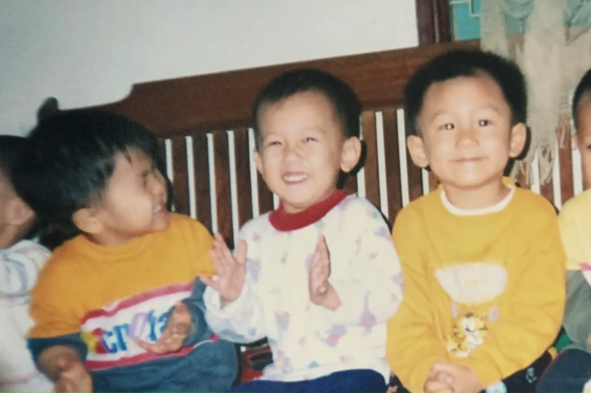

My Neighborhood
By Huy Quang Vũ | In my view, establishing long-term relationships may not be easy to find, but it's not difficult to cultivate and maintain them. I believe that through acts of kindness, people tend to stick around, and that's precisely what happened in my own story.
I was born in Hanoi, an enchanting and historically rich city that serves as Vietnam's capital. My upbringing took place within a middle-class family in a cozy, close-knit neighborhood. Looking back, those were indeed wonderful times. The proximity of our community members forged strong bonds across generations. It was customary for kids like myself to greet our elders with politeness, and it wasn't uncommon for families to spontaneously share their delicious food, simply as a gesture of kindness. Remarkably, even as we've grown into adults, we've held onto this tradition. However, it saddens me deeply to observe that many children these days no longer follow these cherished customs. They've abandoned the practice of greeting their elders, and, in some cases, exhibit rudeness. I believe that this shift in behavior may be influenced by the prevalence of social media, where different norms and values are sometimes projected. I can't help but wonder what the future holds for these young individuals. Will they contribute to a society marked by neglect and cruelty? Only time will tell.
This sense of togetherness also led to regular gatherings with friends from our neighborhood, especially during the afternoons following school. As children, our favorite pastime was playing street football, a game that has produced many famous footballers around the world, though none of us achieved such heights. Our football matches had rules of our own making, not bound by FIFA regulations. For instance, the person who owned the ball held a special status - we called them the "king," and if we upset them, it meant no more football for the day. During our early years, we frequently rotated positions until we settled on our preferred roles.
I found my niche as a Regista, a player whose primary role is to assist teammates in scoring goals. In this position, I gained a profound understanding of how collective effort contributes to a greater goal, which in this case, was our team's football victory. It became evident that a striker couldn't score without the ball, and my responsibility was to pass the ball to my teammates, not the opponents, although I did make mistakes at times. We all make mistakes, but what truly matters is how we learn from them.
I developed a deep love for assisting my teammates, as it provided me with a sense of helping them become better. This mindset later influenced my career path, driving me to become an enabler for my team.
As we entered our teenage years, academic commitments began to encroach on our football time, and we could only indulge in the sport during the summer months. Nevertheless, throughout the school year, we continued to congregate in our neighborhood's open spaces, engaging in endless conversations about a variety of topics, with a particular emphasis on the romantic entanglements that often define the teenage experience. It was a quintessential part of adolescence.
As the years have passed, the opportunities for us to meet have become increasingly scarce. The demands of work and the relocations of some, including myself, have scattered us in different directions. However, every time I return to my neighborhood, I am greeted by the same warmth and closeness that defined our upbringing. The tradition of respectfully greeting our elders remains intact, and their responses are still adorned with big smiles.
During national holidays, the children of our neighborhood once again converge at one person's home to watch football, engage in board games, and discuss matters of the heart. I firmly believe that without the years of shared experiences from our past, we would never be able to come together like this, as the bonds we formed back then have endured. Building a friendship like ours cannot happen in just a few days; it takes years of nurturing and connection.
These early experiences have laid the solid foundation for my unwavering dedication to nurturing long-lasting friendships, and they continue to shape the way I value and cherish the bonds I have with others.